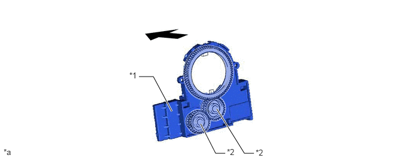

NM35K0CC
_54
制动
_079357
制动控制/动态控制系统
_0384806
制动控制系统（HV 车型）
DE
详情
F
制动控制/动态控制系统 制动控制系统（HV 车型） 详情 转向角传感器
构造
a.
转向角传感器检测转向角度和方向并将其输出至防滑控制 ECU。
b.
转向传感器由 2 个磁铁型检测齿轮和 MRE（磁阻元件）传感器组成。检测齿轮旋转时，MRE 材料的电阻波动且转向传感器利用波动时间来判定转向角度。

2.417,1.333 2.667,1.333
2.667,1.333 2.99,1.938
true
3.917,2.667 3.75,2.667
3.75,2.667 3.49,2.156
true
4.417,2.667 4.25,2.667
4.25,2.667 3.771,1.896
true
2.25,1.229 2.563,1.385
0.313,0.156
10
false
*1
3.948,2.563 4.26,2.719
0.313,0.156
10
false
*2
0.063,2.563 0.375,2.719
0.313,0.156
10
false
*a
4.448,2.573 4.76,2.729
0.313,0.156
10
false
*2
| *1 | 转向传感器 | *2 | 检测齿轮 |
| *a | 所示插图仅为示例。 | - | - |

|
前 | - | - |